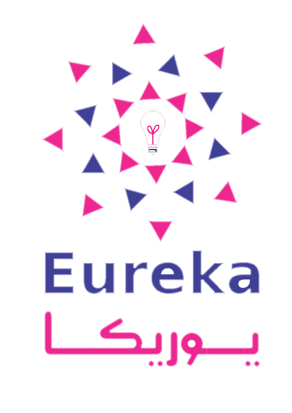
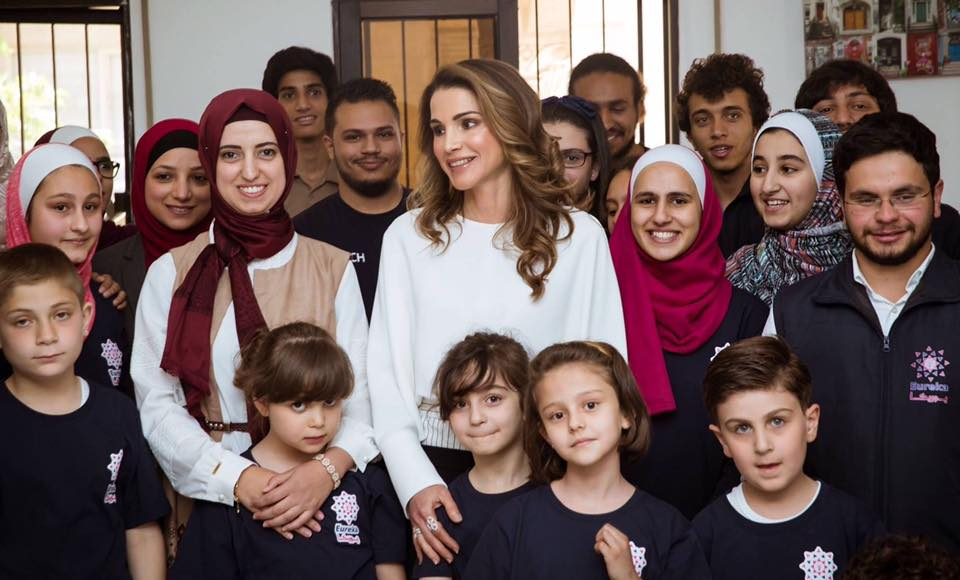

Eureka is an Academy that people go to to take courses that could help them with their future. For example, it teaches them programming, robotics, renewable energy, games development, web development, and much more. I was one of those people who went to Eureka, so I want to share my experience with people so it could be easier for them to find what they want to do in the future.
I’ve been in Eureka for around a couple of years now and I’ve learned a lot of things and made many projects. Some of the projects that I made were a device that feeds the fish automaticly, and measures the temperature of the water, a Robo-waiter, it’s a robot that serves people at restaurants,I also made a 3D project on a program called sketch up, I made a game which is still not complete, and my latest project which is a small website that I wrote in it about Thomas Edison.My Projects
There are two sections of the levels of Eureka, little innovators, and bright innovators, little innovators are 6 basic levels whereas bright innovators are 10 advanced levels that come after the little innovators section. My two favorite levels are level2 and level5. I liked level2 although it wasn’t as advanced and complicated as the other levels is because I had a lot of fun with it, and it was kind of easy so I could do it years after I took the level and I would still remember most of the things and have fun with them. Level5 was also one of my favorite levels because in it we built a lot of robots including an arm robot, a line follower robot, a sumo robot, and a boat which was one of my favorite robots to work on.
Eureka has a lot of advantages but that doesn’t mean there won’t be any disadvantages. Sometimes I have to study for my exams at school and make a project for Eureka, which sometimes stresses me out and makes me lose focus, which I try solving by forgetting about one thing and focus on one thing.
In conclusion, that was my experience in Eureka Tech Academy. I hope I made it at least a bit easier for you to choose what you want to do in the future and if not good luck finding what you like to do.
